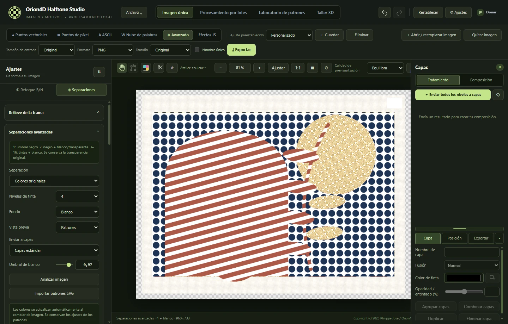

V2.0.0 · WINDOWS X64
Orion4D Halftone Studio
Tramas, tintas y relieve
Transforma tus imágenes en grabados, prepara separaciones de tinta o esculpe tramas en 3D. Todo el procesamiento de imágenes se realiza en tu equipo.

Las herramientas
Abre el capítulo que corresponda a tu proyecto, desde la primera trama hasta el archivo final.
Tramas y grabados
Puntos vectoriales y de píxel, rayado continuo y puntillismo adaptativo.
Separaciones de tinta
CMYK, bicromía, tricromía y hasta ocho tintas con perfiles ICC.
Arte ASCII y nubes de palabras
Compón una silueta SVG o un retrato con caracteres y palabras.
Capas y exportación
Superpón las tintas y exporta composiciones o películas de impresión.
Taller 3D
Esculpe una trama, prepara una litofanía o anima un relieve.
Efectos JS y MCP local
Escribe efectos con controles ajustables y maneja las herramientas 2D mediante MCP.
Tamaños de entrada y exportación independientes
Procesa la imagen a su tamaño original, a un porcentaje o a una dimensión fija. Elige por separado el tamaño de salida para imágenes individuales o lotes.
Ejemplos del taller
Explora los ejemplos y consulta los ajustes con los que se crearon.

EFECTOS JS
Rayado topográfico
Los tonos de la imagen deforman las líneas. En las sombras aparece una segunda red.
Crear un efecto con controles ajustables ↗Comparar siete tratamientos en blanco y negro ↗

TRAMA RETRO
Guilloché de seguridad
Las líneas onduladas se cruzan a medida que los tonos se oscurecen.
Explorar los motores de trama ↗
SEPARACIONES
Un motivo por tinta
Una imagen combina varias tramas. En el modo Avanzado puedes ajustar el motivo, el color y la cobertura de cada una.
Preparar una separación ↗
NUBE DE PALABRAS
Una silueta hecha de palabras
La máscara de la imagen determina la posición. El tamaño, la rotación y el color de las palabras dibujan la silueta.
Crear una nube de palabras ↗
TALLER 3D
Dorado simulado
En el taller 3D puedes ajustar el material, la iluminación y el encuadre de una trama.
Iluminar una trama en relieve ↗